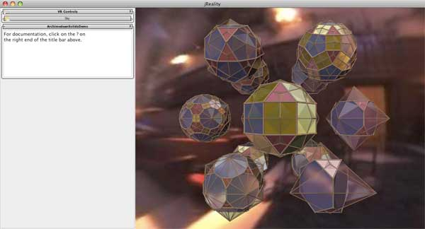

Charles Gunn, gunn@math.tu-berlin.de
First-time users: See this introduction. to the visualization tools involved.
In euclidean space, there are two famous families of polyhedra. The platonic solids are characterized by the property that each face is an identical regular polygon. The Archimedean solids are characterized by the property that all faces are regular polygons, and all vertices are equivalent (meaning that the symmetries of the solid are transitive on the vertices. I think:)). Sometimes the terms regular and semi-regular are used instead of Platonic and Archimedean, resp. There are also regular star solids which don't fit into this category, so probably one has to specify regular convex polygons (to disqualify the star-shaped faces.)
Platonic and Archimedean solids can be characterized by their vertex figure: the sequence of regular polygons that surround a vertex. This is well-defined since all vertices are identical in both cases. The polygons themselves can be represented by their number of sides n. So, the name of the cube in this nomenclature is 4.4.4, since 3 squares meet at each vertex. Each of these polyhedra also has a dual polyhedra, formed by joining the midpoints of the faces along edges which are perpendicular bisectors of the original edges. By duality, the resulting dual polyhedra has identical faces (since the original figure has identical vertices) but the vertices are different.
With this application the user can explore these two families of solids and their duals.
On startup the user should see something like the figure below. This displays the 13 Archimedean solids and their duals positioned on the 12 vertices of the cuboctahedron (3.4.3.4) and its central point.
If the left window is not visible, you're probably not reading this document! Use the menu item "Window->Left Slot" to toggle display of the panel there.
The current control is exclusively through keyboard and mouse. Double-clicking on a solid will focus on it and remove all the other solids from the display. Double click again to return to the group. Keyboard controls include:
Open the panel labeled "Sky" in order to change or disable the skybox.
Use the menu item "File->Export->Image" if you'd like to save off images (.png or .jpg) from the application.
